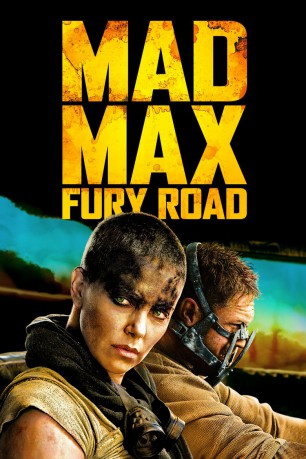
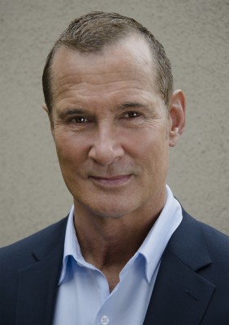

#4407 Mad Max 4 - Fury Road
Auszeichnungen: 6 Oscars gewonnen für 4 Oscars nominiert 4 BAFTA-Awards gewonnen
 
 IMDB-Wertung: 8.1 / 10
IMDB-Wertung: 8.1 / 10  IMDB-TOP-Platzierung: 203
IMDB-TOP-Platzierung: 203  Metascore: 0
Metascore: 0 
An den äußersten Grenzen unseres Planeten, in einer trüben Wüstenlandschaft, wo die Menschheit verkommen und fast jeder bereit ist, für das Überlebensnotwendige bis an die Grenzen zu gehen, leben zwei Rebellen. Sie sind auf der Flucht und könnten der Schlüssel dazu sein, die zerfallene Ordnung wiederaufzurichten. Auf der einen Seite ist da Max ein Mann der Tat und weniger Worte, der nach dem Verlust seiner Frau und seines Kindes Seelenfrieden sucht. Auf der anderen Seite ist da Furiosa eine Frau der Tat, die glaubt, dass sie ihr Überleben sichern kann, wenn sie es aus der Wüste bis in die Heimat ihrer Kindheit schafft. Als Max gerade beschlossen hat, dass er alleine eigentlich besser dran ist, trifft er auf eine Gruppe in einem Kampfwagen, an dessen Steuer sich die elitäre Herrscherin befindet. Die Rebellen sind dem Warlord Immortan Joe entkommen, der ihnen nun nachstellt.
Jahr: 2015
Dauer: 120 Minuten
FSK: 16
Land: Studio: Warner Bros.Tonspuren: DTS - , DD5.1 - ,
Untertitel: Deutsch, Englisch,
Auflösung: 1080p (1920x800) Größe: 13619 MB
Genre: Action, Abenteuer, Sci-Fi, Thriller
Regisseur: George Miller
Drehbuch: B.J. Nelson
Soundtrack:
Darsteller:
 Tom Hardy als Max Rockatansky
Tom Hardy als Max Rockatansky Charlize Theron als Imperator Furiosa
Charlize Theron als Imperator Furiosa Nicholas Hoult als Nux
Nicholas Hoult als Nux- Hugh Keays-Byrne als Immortan Joe
 Josh Helman als Slit
Josh Helman als Slit Nathan Jones als Rictus Erectus
Nathan Jones als Rictus Erectus Zoë Kravitz als Toast the Knowing
Zoë Kravitz als Toast the Knowing- Rosie Huntington-Whiteley als The Splendid Angharad
 Riley Keough als Capable
Riley Keough als Capable Abbey Lee als The Dag
Abbey Lee als The Dag- Courtney Eaton als Cheedo the Fragile
- John Howard als The People Eater
 Richard Carter als The Bullet Farmer
Richard Carter als The Bullet Farmer- Iota als The Doof Warrior
 Angus Sampson als The Organic Mechanic
Angus Sampson als The Organic Mechanic- Megan Gale als The Valkyrie
- Melissa Jaffer als Keeper of the Seeds
- Jon Iles als The Ace
- Coco Jack Gillies als Glory the Child
 Chris Patton als Morsov
Chris Patton als Morsov Stephen Dunlevy als The Rock Rider Chief / The Winchman
Stephen Dunlevy als The Rock Rider Chief / The Winchman-  Richard Norton als The Prime Imperator
- Vincent Roxburgh als Imperator
 John Walton als Imperator
John Walton als Imperator- Judd Wild als War Rig War Boy
- Greg van Borssum als Ripsaw Imperator / The Breakman
- Cass Cumerford als The Wretched
 Hunter Stratton Boland als War Pup
Hunter Stratton Boland als War Pup- Debra Ades als Desperate Woman , uncredited
- Toby Ayers als Wayward Child , uncredited
- Rhavin Banda als War Boy , uncredited
- Nerida Bronwen als The Wretched , uncredited
 Hélène Cardona als The Wretched , uncredited
Hélène Cardona als The Wretched , uncredited- Georgia Jarrett als Wretched One , uncredited
 Hiroshi Kasuga als The Wretched , uncredited
Hiroshi Kasuga als The Wretched , uncredited- Jennifer Hagan als Miss Giddy
- Melita Jurisic als The Vuvalini
- Gillian Jones als The Vuvalini
- Joy Smithers als The Vuvalini
- Antoinette Kellermann als The Vuvalini
- Christina Koch als The Vuvalini
- Quentin Kenihan als Corpus Colossus
- Ben Smith-Petersen als Chanting War Boy / Red Flare Warrior
- Russ McCarroll als Blood 'Shed' War Boy
- Elizabeth Cunico als Milking Mother
- Robert Jones als Ripsaw Driver
- Sebastian Dickins als Polecat Lookout
- Darren Mitchell als Black Mask
- Crusoe Kurddal als The Accusing Dead
- Shyan Tonga als The Accusing Dead
Datei: X:\4-Tetralogie(M-Z)\Mad Max\Mad Max 4 - Fury Road (2015, FSK16, 1920x800).mkv seit 13.09.2016
Festplatte: HD Collection-3(N-Z)-6(A-Z)
 Es gibt insgesamt 8 Filme in der Gruppe '4-Tetralogie(M-Z)\Mad Max'
Es gibt insgesamt 8 Filme in der Gruppe '4-Tetralogie(M-Z)\Mad Max'